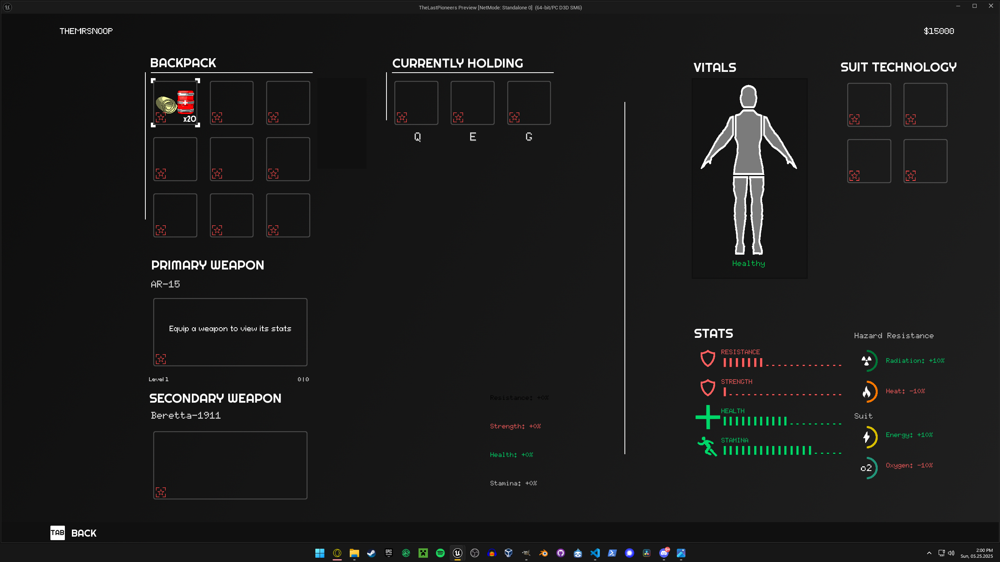
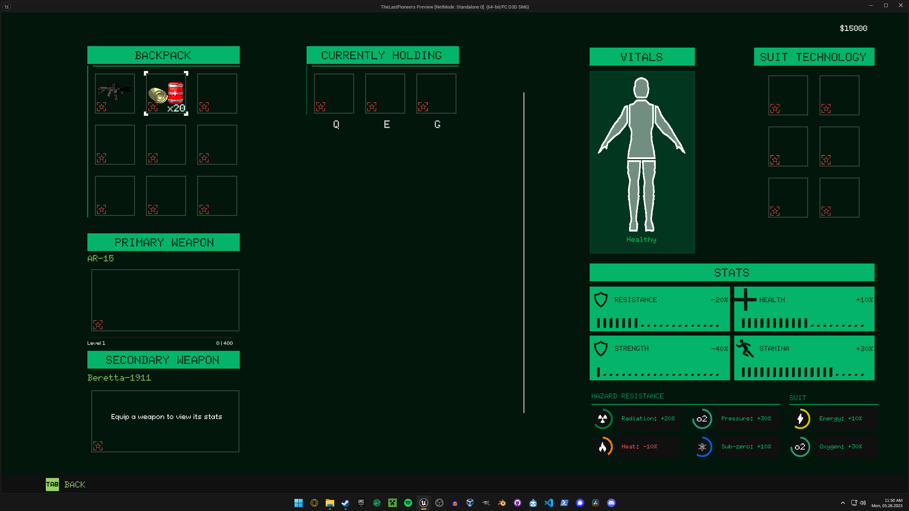
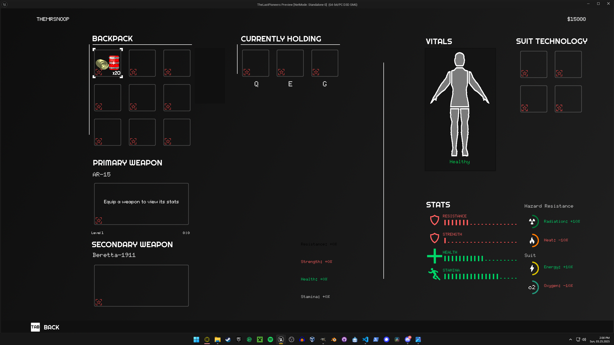
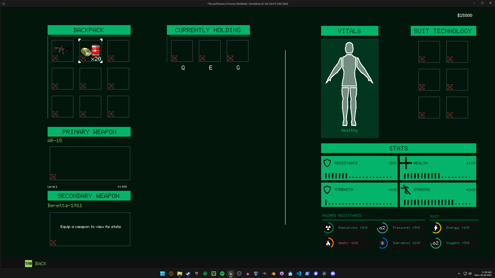

This development period was marked by improvements to everything actually important, like the FPS combat, inventory systems, and the sequence between picking various missions.
Cosmosoldiers are the Soviet Union's go to set of space soldiers to defend key areas around the solar system.
For a while, they've been pretty stupid, since I first added them in August last year. Mostly because I followed a video tutorial for it, and didn't really bother actually learning what I did. That is why there were many issues present with the AI behavior. For example, if a Cosmosoldier even saw the tiniest glimpse of you, it would aimlessly spray its weapon until the end of time. To fix this, I had to learn the ins and outs of the Unreal Engine Behavior Tree system. It took a little bit, but I was able to figure it out. Now, after loosing sight of you, the Cosmosoldier will investigate into the general location where it last saw you (still using its weapon). After a bit, it will return back to patrol mode. That alone makes the gameplay a lot more fun, but I still want to do things to give the player more control in how they go about things. In dark locations, I need to make it to where if the player uses their flashlight, it'll be easier for the Cosmosoldiers to see the player. I also need to fix their hearing, because as of right now, they are effectively deaf. You can shoot right behind them, and they'll only catch you if you walk in front of them. Aside from improving their general AI, they now have to reload their weapon, just like you. It was kind of annoying before as they would literally just never run out of bullets.
Aside from working on the actual AI for the Cosmosoldiers, I worked on the actual mesh as well, because as of right now they are still the basic Unreal Engine manikins 💀
I've been putting off both modeling, and then animating the actual character meshes for so long, and they've kind been stalling the real development for the game.


After coninuing to build out Stellagrad, (which has taken so long to make, and is so large, it'll probably be unique in its size) I decided it would be cool to at least experiment with adding enemy drones to my game. These drones would be paired with a squadron of Cosmosoldiers, and have the ability to scan the environment for any threats. If they find you, they are equipped with two 9mm guns to try and take you out, as well as very loudly alerting you of your position. The drones themselves shouldn't be that hard to take down, but a single one can easily start a much larger fire fight.
When designing the enemy, I would take inspiration from the movie Oblivion to model this drone. I also used the Soviet Venera Probes as a reference when texturing the spherical machine.
I haven't really messed with the Inventory System in months, if you could even call it an inventory system. I started by adding an item details UI, that would better inform the player what something actually does. I would then add things that everyone expects from an inventory menu, like the ability to split stacks, and drop items. I also added a slot for a secondary weapon, which is limited to something one-handed (like a pistol or revolver). This is also something you can change with the new inventory menu.
I am also experimenting with allowing enemies to use the same items that you can use. Right now, some of them will have randomly generated inventories, and by killing these enemies, they will drop every item in their inventory, which is the primary way to get items.
During the early stages of planning, I planned to add 3 different classes of characters. Each class would have had special abilities and stat boosts applied to them. However, now I have scratched that idea in replacement of a system called Suit Technology. Basically, now the player will be able to obtain technology modules that apply different modifiers to a list of stats. Most of them affect core stats like Health and Strength, while others effect protections against specific hazards, like radiation or heat damage.
When you kill a Soviet enemy, like a Comsosoldier, you'll have the rare ability of searching their suit for their Suit Technology. Most of the tech you get will be damaged, which significantly reduces its stats. However when its not damaged, some Soviet tech will be better then some of the best American tech that you find or buy. Obviously it'll be rare to find, but potentially worth it. However, the use of Soviet Suit Technology is strictly prohibited as a member of the Combined United States Space Forces. If you are found with the possession of Soviet Tech, it will be confiscated, and you will have to pay a hefty fine. This sort of makes Soviet tech sort of like contraband, that you have to be aware you are possessing whenever you enter American military bases.
Its important to note that the whole Suit Tech mechanic is so far in its early stages of development, but hopefully it will be decently fleshed out soon.
Over the past year, this game has gone through many versions of many different UI styles (which can be seen in the evolution of this website design too). It started with a 70s styled terminal computer style (kinda like fallout), to a more modern, flat (and kinda generic) UI style in November. Since then, I have continued to tweak many elements, and the overall design is heading back to that Computer Terminal Style. I have experimented with fully embracing this style.
 



This new design might also carry over to the 3D world, as I am thinking of using this retro green outline when explaining missions objectives.
.png)
I have been futher both experimenting with, and tweaking the core movement. By adding a stamina system, and restricting the jetpack mechanic, I am attempting to slow down the movement, and make the game feel more grounded. Previously, the player was allowed to just mostly zoom around the map, despite me attempting to balance, and tweak the jetpack mechanic. Now, instead of 3 slight jump boosts that recharge over time, I am experimenting with a single more powerful boost, that takes more time to recharge. Also, previously, there was no limit to how long you could continuously sprint, aside from depleting all your oxygen, and dying of asphyxiation. I personally find stamina systems to be annoying in some games, so I am working to balance it, and make sure that it doesn't always feel like your out of breath, (even if you are sprinting in a multi-hundred pound Astronaut suit).
I also re-added things like Grenades, Throwing Knives, and Health Stims. Technically, they've been in the game since July last year, but especially Grenades and Throwing Knives kinda sucked. I first started with Grenades, making them properly be thrown, and now when they explode, they do a bunch of Calculus math (or something idk) to ray cast in all directions from a single point. I can get the end point of these rays to act as realistic shrapnel trajectories, and apply the correct amount damage to the correct armor segment, accordingly. Aside from this, the explosions now realistically interact with the world, launching things like items close to the explosion, and damaging (specific) nearby structures.
Now that I had added Grenades, I started working on impact grenades, Molotovs, and smoke grenades. Molotovs and impact grenades use physics to work. I am storing the current, and past velocity values after the player throws these. Constantly comparing the 2 vectors, if the difference between them is high enough, the bottle breaks, and spreads fire on nearby surfaces, or the impact grenade would explode. I am admittedly very ignorant when it comes to Niagara and Cascade particle systems, so basically every VFX is from some asset somewhere. Luckily, the Molotov fire is somehow effected by gravity, making it look very realistic.
As mentioned previously in this article, I am planning to make Stellagrad possibly the largest map in the game, as I don't want to be spending all this time on a single map, if I am planning to create like 12. Heres a bit more I've added to the environment.


Remember nothing is final, and much of this is likely to change and evolve a lot in the future.